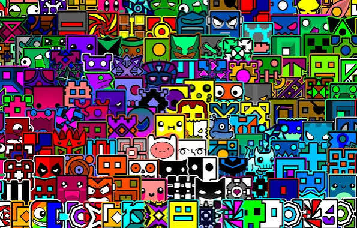
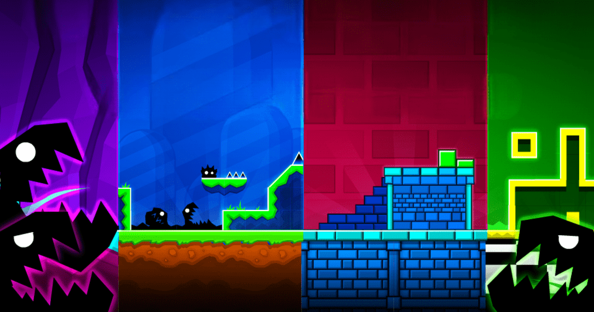

Факти про гру
- 🎮 Гру створив Роберт Топала — шведський розробник, відомий під псевдонімом RobTop.
- 📅 Geometry Dash вийшла у 2013 році. Спочатку гра мала простіший вигляд, але згодом отримала багато нових можливостей.
- 🛠️ Гравці можуть створювати власні рівні. Для цього є редактор, у якому можна розміщувати перешкоди, додавати ефекти та налаштовувати музику.


Основні рівні гри
- Stereo Madness
- Back on Track
- Polargeist
- Dry Out
- Base After Base
- Can't Let Go
- Jumper
- Time Machine
- Cycles
- xStep